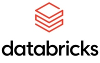

I am an experienced IT professional skilled in turning raw data into meaningful
information and deriving actionable insights for making informed business decisions.
I am also proficient in Client Consulting, Research, Problem Troubleshooting and
Resolution, Platform Administration, and Solution Development with a focus on
improving business operations and efficiency.
This project performs a comparison of three regression models using R and discusses why one is a better fit.
Skills: R Programming, Regression Modeling, Report Writing
This project contains examples of creating and applying functions to calculate and analyze probabilities, and includes basic visualizations using matplotlib.
Skills: Python Programming, Probability Analysis, Custom Functions, Data Visualization

This project uses PySpark in a Databricks computing cluster to compare regression models for predicting results over a large dataset.
Skills: PySpark/Python, Regression Modeling, Cluster Computing
This project performs statistical analysis operations using SAS. It also includes a linear regression model / price predictor and sample output.
Skills: SAS Programming, Statistical Analysis, Regression Modeling
This project performs linear regression modeling and statistical analysis operations using R. It also includes data visualizations using ggplot.
Skills: R Programming, Regression Modeling, Statistcal Analysis,Data Visualization
Power BI is Microsoft's Business Intelligence and Data Visualization tool. The link connects to my online Power BI portfolio hosted at NovyPro.com
Skills: Power BI, Power Query, DAX, Data Modeling, Data Visualization

This certificate course was completed in 2019. This project folder contains reports and data from the three classes in the course. Most exercises used Excel.
Skills: Excel, Statistical Analysis, Report Writing / Formal Presentations
This space will display information about a project created in SQL.